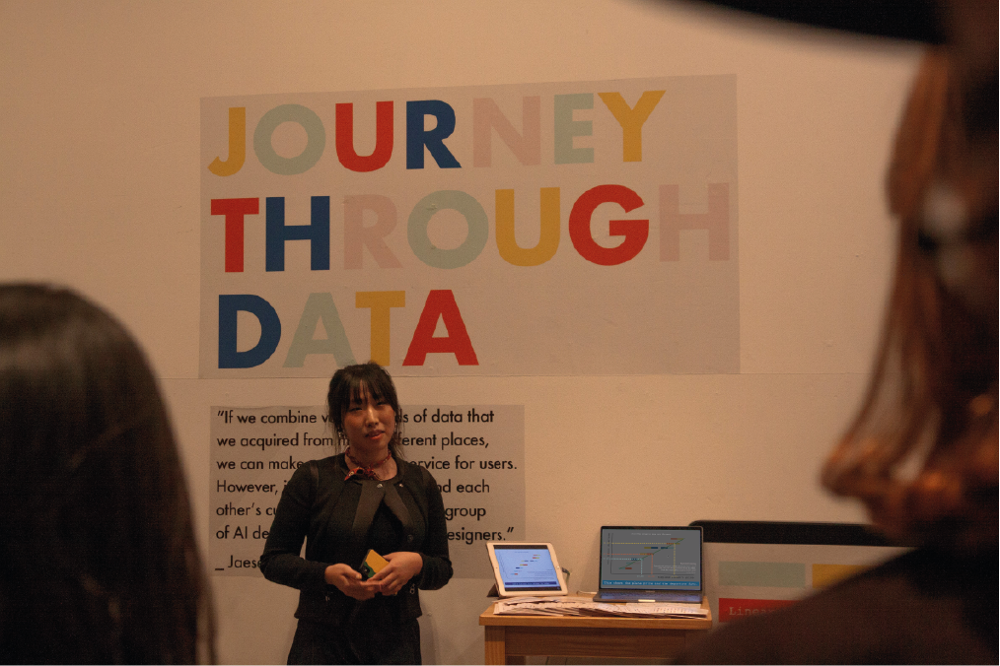
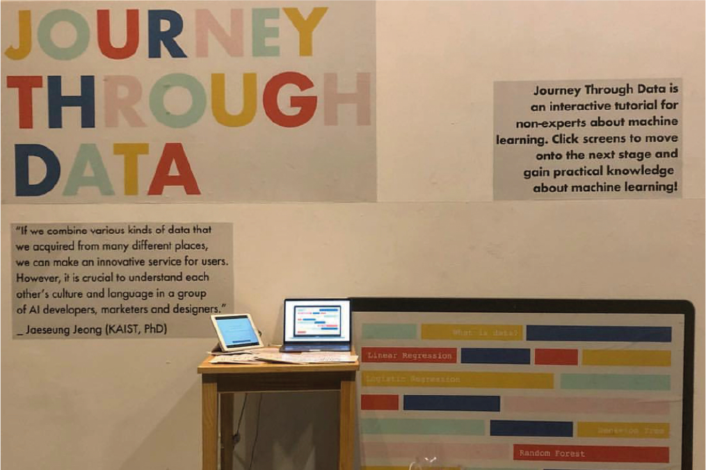

Bachelor thesis at Yonsei University done for 7 months from March 2018 to November 2018
So Heum Hwang
about
playground
works
Journey Through Data
an interactive learning platform for non-experts about machine learning, where each tutorial explains ML algorithms with real-life examples to enhance user's understanding.
Individual Project
UI : Framer, Illustrator
Video : After Effects & Premiere Pro
How might we improve communication between machine learning experts and non-experts?
Key Components
Respond to questions with your own answers, click on different components and see how they change and move during the process
After going through real life examples, see how each algorithm is visualized with graphs and see how data is mapped on the graph
Aside from main explanation texts, learn the specific details in machine learning to know more about the concept
Respond to questions with your own answers, click on different components and see how they change and move during the process
After going through real life examples, see how each algorithm is visualized with graphs and see how data is mapped on the graph
Aside from main explanation texts, learn the specific details in machine learning to know more about the concept
Design Process: Discover
This project first started when I saw autonomous vehicles causing fatalities while driving. In the midst of vehicle companies developing autonomous vehicles and consumers being reluctant to accept this doubtful technology, I started to question how technology can approach users in a safer and a ensuring method.
For 1 month, I explored this topic through reading and digesting research papers published mainly in AI related conferences. My first interest in autonomous vehicles gradually expanded to human centered machine learning.

I was curious about the current production process of AI related systems, especially because the process would lead to user-reluctant AI services. I interviewed three main user groups of AI related services: Developers, UX Designers and its users.

“It’s hard to work with non-engineers since I have to explain everything. I feel there is a big wall that we cannot cross between.”

“I’ve tried to learn about machine learning, but they only focus on theories. I still do not know how to apply them in real life.”

“I’m curious about how the services that I’m using are made. How does Netflix know all the contents that I’ll enjoy?"
“It’s hard to work with non-engineers since I have to explain everything. I feel there is a big wall that we cannot cross between.”
“I’ve tried to learn about machine learning, but they only focus on theories. I still do not know how to apply them in real life.”
“I’m curious about how the services that I’m using are made. How does Netflix know all the contents that I’ll enjoy?"
Design Process: Define
Can technology approach non-experts in a fun way? Does machine learning always have to start with complex mathematical expressions that make non-experts non-approachable in the first place?

Design Process: Develop
I went through 3 stages in total to develop the content in machine learning tutorial for non-experts. With studying different machine learning algorithms myself, I started to express what I learned and understood in a perspective of a non-expert. Then, I conducted several user testing to non-experts and evaluated logical flaws in my tutorial content.

I started off with 8 main chapters along with real life examples for each chapter (each ML algorithm).

8 out of 10 people could not understand the 2 chapters and the connection between the 2 and the rest.

In addition to the main narration, users wanted a more detailed information about machine learning.
I started off with 8 main chapters along with real life examples for each chapter (each ML algorithm).
8 out of 10 people could not understand the 2 chapters and the connection between the 2 and the rest.
In addition to the main narration, users wanted a more detailed information about machine learning.
who do not have prior knowledge in Machine Learning...
5 times increase in understanding in ML compared to initial understanding
Users rated interaction as the 2nd most helpful factor in understanding ML
All users responded that real-life examples helped their understanding in ML

Design Process: Deliver

How does our personal info get collected as data?

How does ticket companies predict airplane ticket prices?

How does e-commerce companies predict who to give discounts?

How does music services predict customers who will pay for the fee?

How does music services predict customers who will pay for the fee?

How does iPhone X use facial recognition to unlock?
Exhibition


